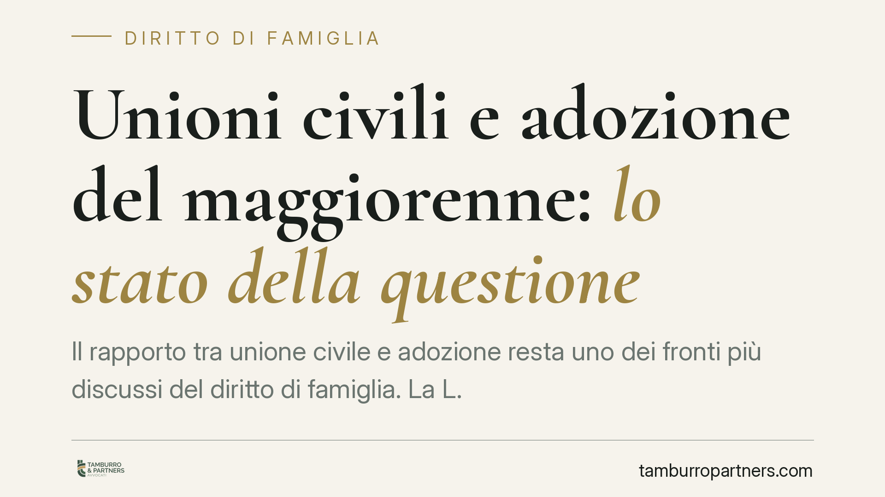

Unioni civili e adozione del maggiorenne: lo stato della questione
Il rapporto tra unione civile e adozione resta uno dei fronti più discussi del diritto di famiglia. La L. 76/2016 non equipara in tutto l'unione civile al matrimonio, e proprio sul terreno dell'adozione si concentrano le questioni aperte. Chiariamo cosa dice oggi il quadro normativo, distinguendo l'adozione del maggiorenne da quella internazionale di minori, e quali effetti pratici ne derivano.

Premessa metodologica
Sul tema circolano notizie relative a pronunce non ancora verificabili. In questa sede ci atteniamo al diritto positivo vigente e consolidato, senza attribuire a sentenze specifiche principi che non possiamo confermare nel contenuto e nella portata. Chi segue una vicenda concreta deve fare riferimento al testo integrale della pronuncia che lo riguarda.
Il quadro normativo: L. 76/2016 e rinvii
La legge 20 maggio 2016, n. 76 (cosiddetta legge Cirinnà) ha istituito l'unione civile tra persone dello stesso sesso. L'art. 1, comma 20, prevede un meccanismo di estensione: alle parti dell'unione civile si applicano, salvo diversa disposizione, le norme che richiamano i termini "coniuge", "coniugi" o equivalenti.
Questo rinvio incontra però un limite espresso. Lo stesso comma 20 esclude dall'estensione le disposizioni del codice civile non richiamate e le norme della legge 4 maggio 1983, n. 184, sull'adozione. In altre parole, il legislatore ha scelto di non trasferire automaticamente alle coppie unite civilmente la disciplina adottiva prevista per i coniugi. Da qui le questioni interpretative che negli anni hanno interessato la giurisprudenza.
Adozione del maggiorenne: una disciplina autonoma
L'adozione di persone maggiori di età (artt. 291 e seguenti del codice civile) è istituto distinto dall'adozione di minori. Ha finalità prevalentemente successoria e di continuità del nome, non di protezione del minore.
I presupposti principali:
- l'adottante deve superare di almeno diciotto anni l'età di chi intende adottare (art. 291 c.c.);
- occorre l'assenso delle persone indicate dall'art. 297 c.c. — tra cui il coniuge dell'adottante e dell'adottando e i figli maggiorenni — assenso senza il quale l'adozione non può essere pronunciata;
- l'art. 294 c.c. individua davanti a quale autorità e con quali modalità si presta la domanda e si raccolgono gli assensi.
È importante tenere distinti questi riferimenti: la differenza di età discende dall'art. 291 c.c.; il regime degli assensi dall'art. 297 c.c. Confonderli porta a errori sulla base giuridica della domanda.
Adozione internazionale di minori: un piano diverso
Diverso è il tema dell'adozione internazionale di minori, retta dalla L. 184/1983 (si veda, tra gli altri, l'art. 29-bis). Qui la materia è presidiata da requisiti stringenti, da procedure dinanzi al Tribunale per i minorenni e dall'intervento della Commissione per le adozioni internazionali. L'estensione alle coppie unite civilmente è questione tuttora aperta, la cui disciplina è rimessa all'intervento del legislatore.
La distinzione va tenuta ferma: parlare di "adozione" senza specificare se si tratti di maggiorenne o di minore conduce a conclusioni errate, perché le finalità, le norme e i giudici competenti sono diversi.
Implicazioni pratiche
L'adozione del maggiorenne produce effetti soprattutto sul piano successorio. L'adottato maggiorenne acquista verso l'adottante la qualità di figlio ai fini successori e diventa quindi legittimario, ossia soggetto a cui la legge riserva una quota di eredità. L'ingresso di un nuovo legittimario incide sulla distribuzione dell'asse ereditario e può ridurre la quota disponibile di cui il de cuius può liberamente disporre.
Sul piano dei rapporti familiari preesistenti, l'assenso del coniuge e dei figli maggiorenni (art. 297 c.c.) non è una formalità: la sua mancanza impedisce la pronuncia dell'adozione. Va dunque pianificato prima di avviare il procedimento.
Per le coppie unite civilmente che valutano percorsi adottivi di minori, invece, la prudenza impone di non dare per acquisiti esiti non ancora consolidati nel diritto vigente.
Cosa fare in concreto
- Verificate i presupposti anagrafici: controllate la differenza di età minima prevista dall'art. 291 c.c. prima di ogni altra valutazione.
- Mappate gli assensi necessari ex art. 297 c.c. (coniuge e figli maggiorenni di adottante e adottando) e raccoglieteli in forma idonea.
- Distinguete sempre il tipo di adozione: maggiorenne o minore, interno o internazionale, perché cambiano norme e giudice competente.
- Valutate in anticipo gli effetti successori, considerando l'ingresso del nuovo legittimario nell'asse ereditario.
- Prima di decidere sulla base di notizie di sentenze recenti, acquisite il testo integrale della pronuncia e verificatene la portata.
Disclaimer
Contributo informativo a cura di Tamburro & Partners - Avv. Giuseppe Tamburro. Non costituisce parere legale.
Ogni famiglia ha il suo equilibrio.
Separazione, divorzio, affidamento, assegno: se vuoi un confronto riservato su una specifica situazione, scrivi allo studio. Ti rispondiamo entro un giorno lavorativo.